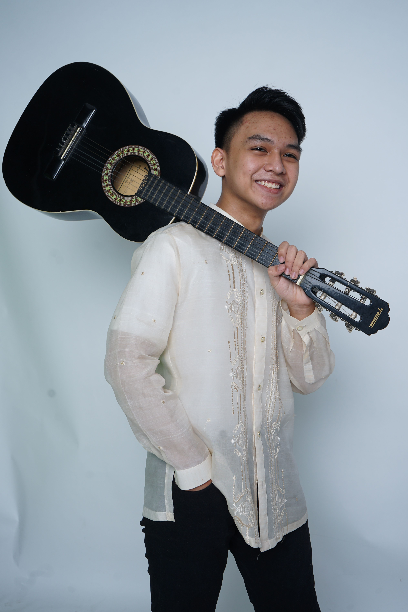
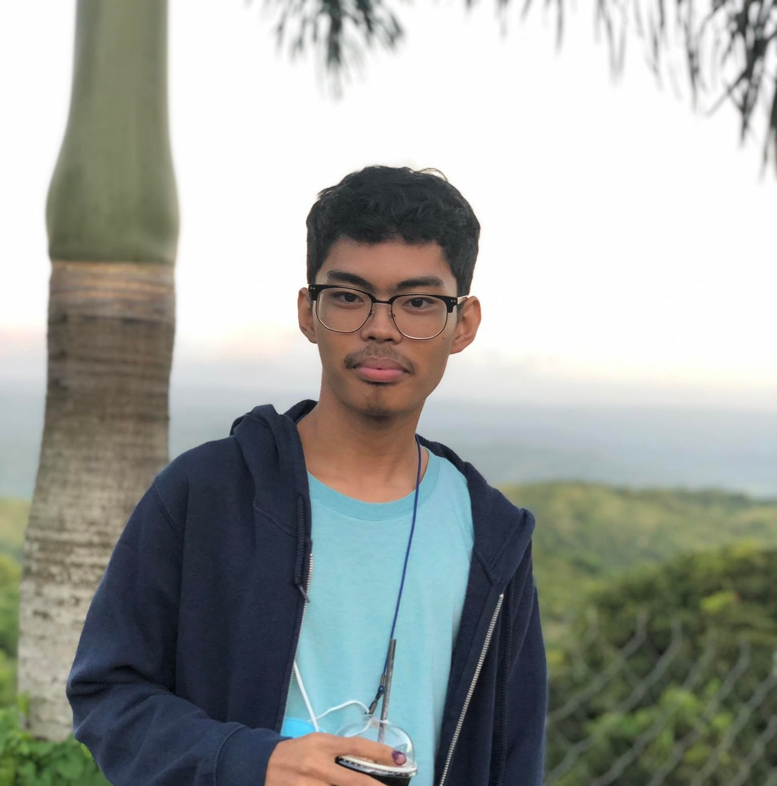

Cicero Barasi
I am Cicero Barasi studying Bachelor of Science in Entertainment and Multimedia Computing at CIIT College of Arts and Technology. Aside from doing computer
related activities, I also play guitar and football.
Email: cicerobarasi@gmail.com
Facebook: @cicero.barasi

Kirk Patrick Besa
Hi! Im Kirk Patrick Besa currently studying Bachelors of Science in Computer Science in CIIT College of Arts and Technology.
My strand in SHS was also Computer programming. Aside from that I am also a musician. Check out my band "Ame" and listen to our song "Guniguni" on spotify!
Mekiah Gabrielle Cadiao
Hi! I'm Mekiah Gabrielle Cadiao, currently studying Bachelors of Science in Computer Science in CIIT College of Arts and Technology. I took HUMSS in Senior High School. I play a lot of video games and enjoy graphic manipulation.
Email: mglcadiao@ciit.edu.ph
Facebook: @kygbrl
Jason Legaspi
Hi! I'm Jason Daryl C. Legaspi, studying Bachelor of Science in Entertainment and Multimedia Computing, majoring in game development, at CIIT College of Arts and Technology.
Email: jasonlegaspi619@gmail.com
Facebook: @jsn.legsp
Aaron Magat
Hello! I'm Aaron Smith Z. Magat currently studying BSEMC (Game Development) in CIIT College of Arts and Technology. My hobby is to either play games, listen to music, watch some series, and read books. You can contact me through my gmail account magataaron2@gmail.com or dm me on discord Elzid#7011.